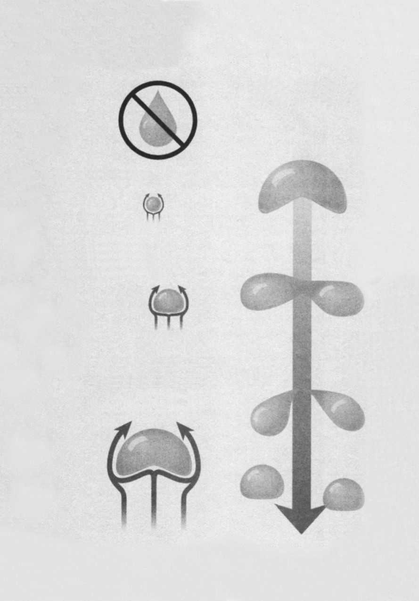

12 自行车齿轮为什么大小不同
数学概念：几何学、速比
从前，自行车看起来很滑稽。19世纪，自行车的前轮巨大，后轮极小，脚蹬和前轮直接连在一起，直径近5英寸，骑车的人必须跳到车座上，就像是骑马一样。这种自行车很快就过时了，部分原因是一旦路面颠簸，骑车的人很容易被甩出车把外。后来，生产商开始生产带齿轮和链条的自行车，骑车的人不仅可以坐在车中间，增强平衡感，还可以根据路况变挡。在平地上骑车也许不需要变挡，但爬山时，变挡可能决定着你到底是在“骑”车还是在“推”车。但是，齿轮到底是怎么工作的？它是怎么让上山更容易，让下山更快呢？
答案在于速比。当大齿轮和小齿轮连在一起时，转动一个齿轮会带动另一个齿轮，但是两个齿轮的速度不同。假设前齿轮是后齿轮的三倍大，前齿轮每转一周，后齿轮需要转三周，这可以根据齿轮的周长来计算（如果你还记得数学课上讲过的内容，就知道圆的周长＝直径×π）。假设前齿轮的直径为30厘米，它的周长就是30乘以π，约为90厘米。如果在齿轮边缘画一个点，当齿轮转动一周，将这个点走过的长度在纸上换算出来，就是94．2厘米。
假设后齿轮的直径为10厘米，它的周长就是31．4厘米，每转动一周，其边缘上的点走过的长度就是31．4厘米。但是，前齿轮每转一周（94．2厘米），后齿轮要转三周（根据两个齿轮的直径差来算，它们的齿轮转速比是3∶1）。
因此，脚蹬每旋转一周，后轮齿轮要旋转三周（否则要费力蹬三次）———从而可以让你“完美地”冲刺下山。
齿轮玩具
齿轮不仅实用，而且是有趣的玩具。如今市面上的很多玩具都带有齿轮，没错，齿轮！齿轮！齿轮！齿轮传动玩具和蓝莲花齿轮组。有些齿轮玩具制作精良：brickowl．com网列出了适用于乐高科技系列玩具的57种齿轮，包括14齿齿轮、带内离合器的24齿齿轮和24齿双面斜切齿轮。
